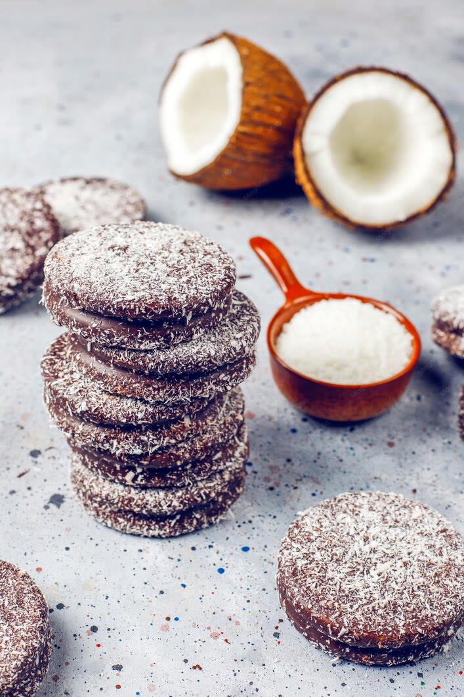

Doces · Biscoitos
Biscoitinhos coloridos

Ingredientes
- 3/4 xícara de margarina
- 1/2 xícara de açúcar
- 1 1/2 xícara de farinha de trigo
- 1 pacote pequeno (50 g) de coco ralado
- 1 colher (sopa) de água
- 1 colher (sopa) de chocolate em pó
- Margarina para untar
Modo de preparo
- Em banho-maria, bata margarina e açúcar até cremoso.
- Junte farinha e coco; forme massa compacta (água se necessário).
- Divida a massa; acrescente chocolate em pó a uma metade.
- Abra cada metade em retângulo 17 × 22 cm sobre papel-manteiga.
- Empilhe, enrole como rocambole; refrigere 30 min.
- Pré-aqueça a 180 °C. Corte fatias de 1 cm; asse ~25 min. Esfrie e congele.
Observação
Congelamento: saco sem ar; descongele 1 h.